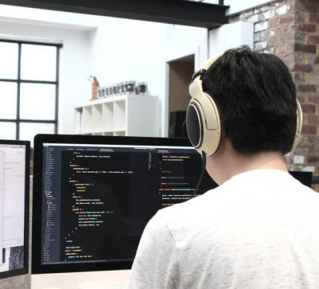
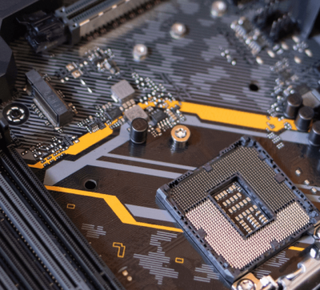
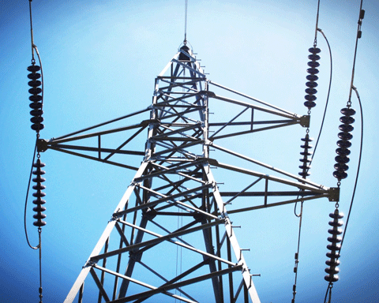
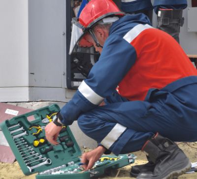
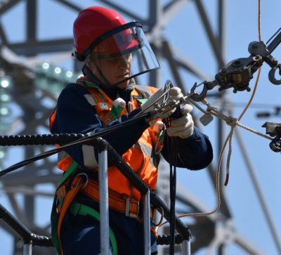

Smer koji te priprema za svet programiranja, mreža i savremenih tehnologija. Učiš programske jezike, baze podataka i izradu softvera.

Fokus na hardver, operativne sisteme i računarske mreže. Osposobljava te za instalaciju, održavanje i podešavanje računarskih sistema.
Kombinacija mehanike, elektronike i računarstva. Idealan smer za one koji žele da rade sa robotima, automatizacijom i industrijskim sistemima.

Bavi se proizvodnjom, prenosom i distribucijom električne energije. Priprema te za rad u elektrodistribuciji i energetskim postrojenjima.

Smer budućnosti — solarna energija, vetroelektrane i hidroelektrane. Priprema te za zelenu ekonomiju i energetsku tranziciju.

Trogodišnji smer koji te osposobljava za električne instalacije, održavanje i popravku elektro opreme u stambenim i poslovnim objektima.

Osposobljava te za montažu, održavanje i popravku elektroenergetskih mreža i postrojenja. Rad na terenu i u postrojenjima elektrodistribucije.